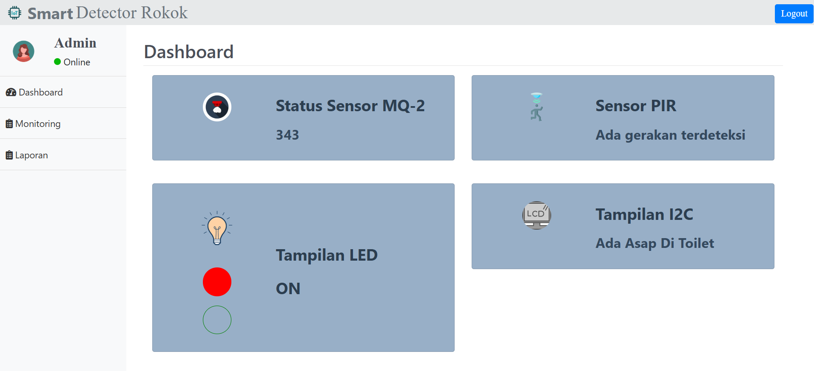
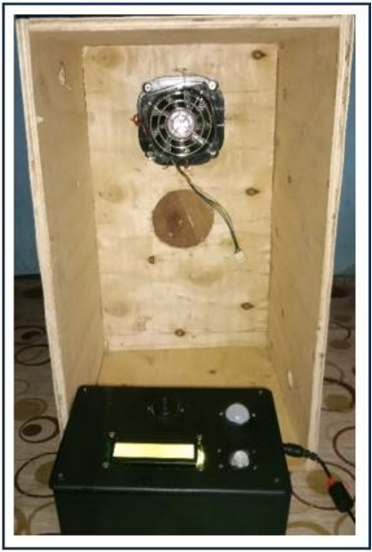
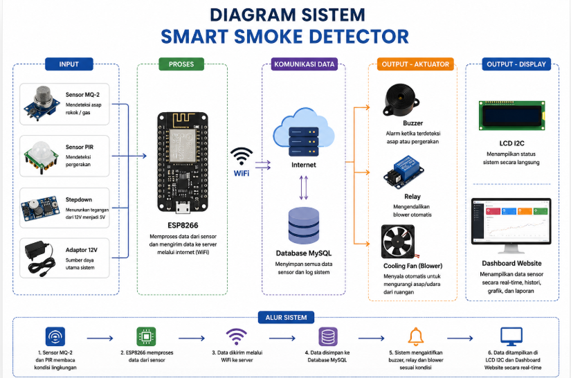
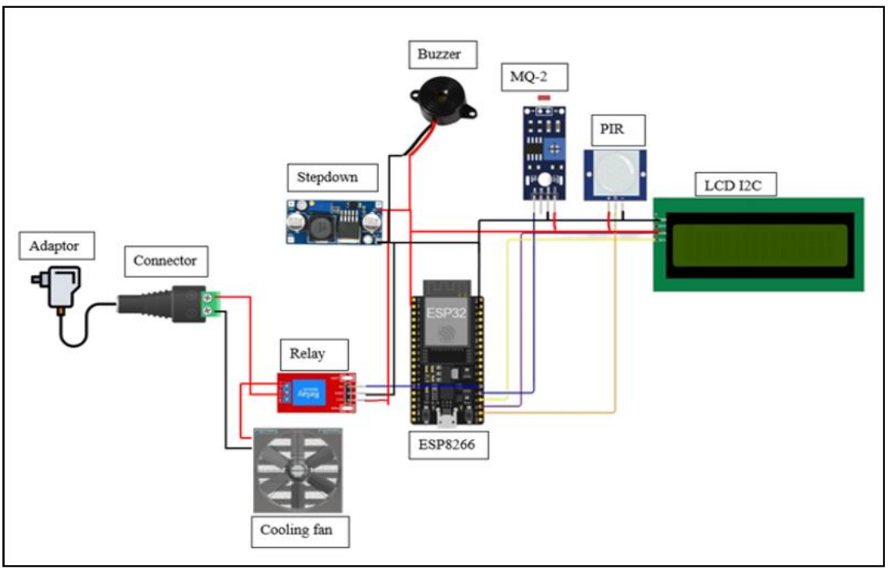

Sistem monitoring asap rokok berbasis Internet of Things (IoT) yang dibuat untuk mendeteksi aktivitas merokok di toilet sekolah secara real-time menggunakan sensor MQ-2, PIR, dan dashboard website.
Smart Smoke Detector merupakan project skripsi yang saya kerjakan secara mandiri mulai dari perancangan hardware, pengembangan website, integrasi database, hingga implementasi sistem monitoring real-time. Sistem ini menggunakan sensor MQ-2 untuk mendeteksi asap rokok dan sensor PIR untuk mendeteksi pergerakan di area toilet sekolah.
Dashboard monitoring digunakan untuk menampilkan status sensor, kondisi ruangan, status LED virtual, tampilan LCD I2C, dan histori data secara real-time.

Prototype hardware terdiri dari ESP8266, sensor MQ-2, sensor PIR, LCD I2C, buzzer, blower, dan modul pendukung lainnya.

Diagram sistem menunjukkan alur kerja Smart Smoke Detector mulai dari proses pendeteksian sensor hingga monitoring melalui dashboard website.

Wiring diagram digunakan untuk menunjukkan hubungan antar komponen hardware seperti ESP8266, sensor MQ-2, sensor PIR, LCD I2C, buzzer, dan blower.
